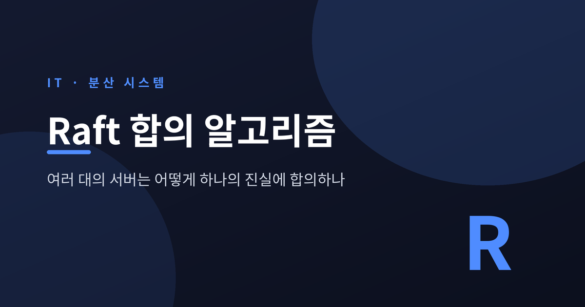
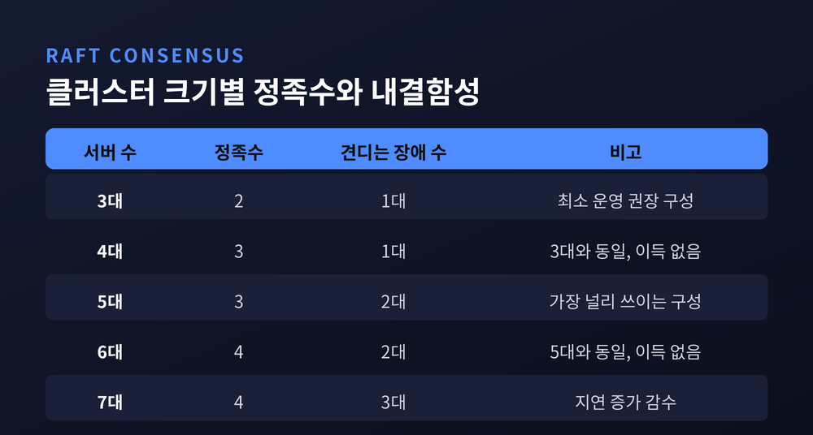
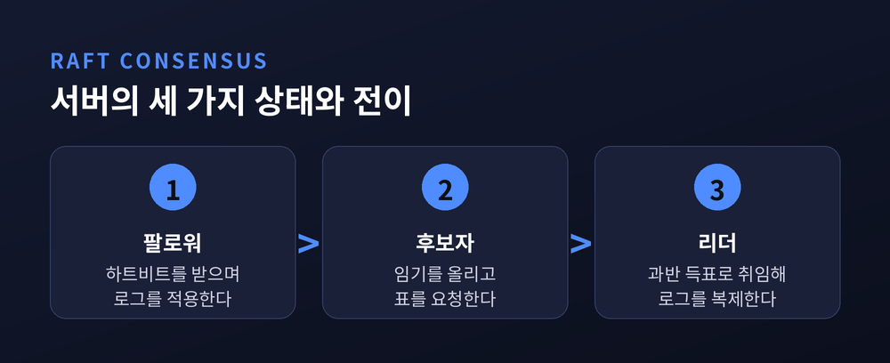
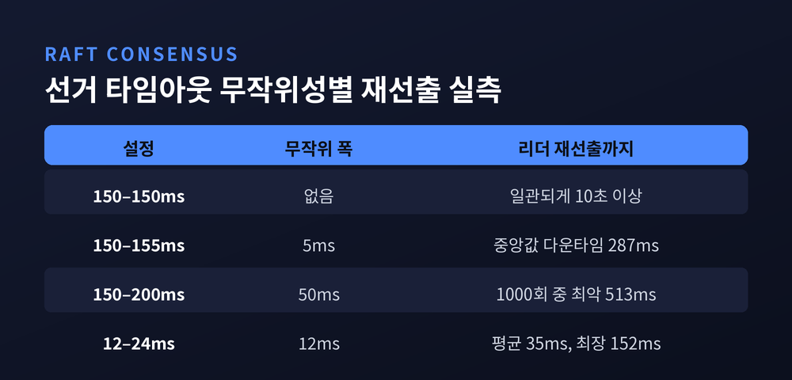
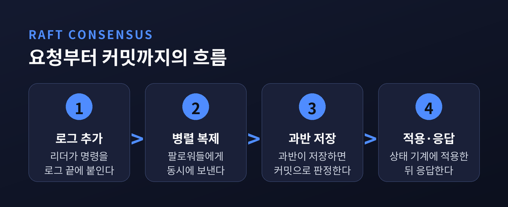
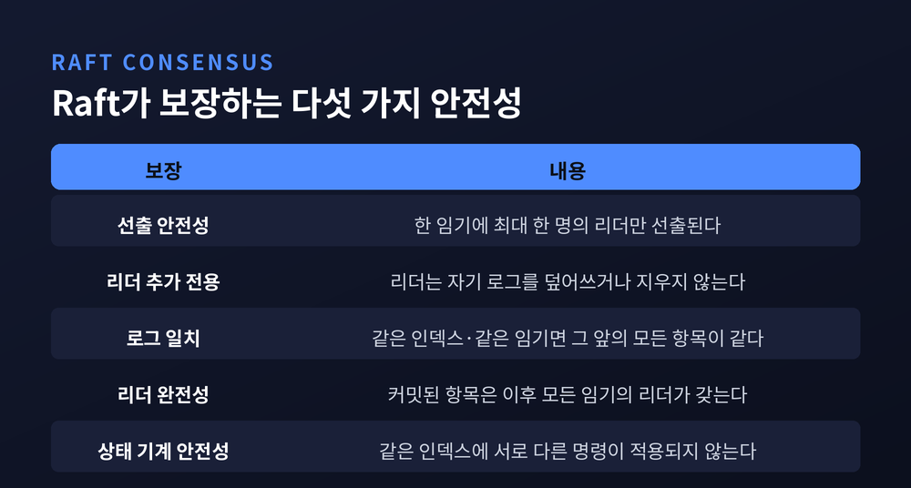
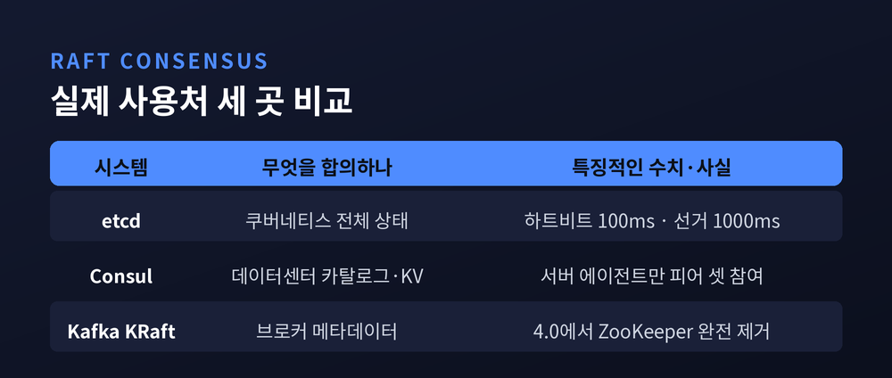

이번 글에서는 분산 합의 알고리즘 Raft가 어떤 방식으로 여러 대의 서버를 하나의 결론에 도달하게 만드는지 정리해 보겠습니다. 리더 선출과 로그 복제, 안전성 보장, Paxos와의 비교, 그리고 etcd·Consul·Kafka KRaft 같은 실제 사용처까지 차례로 살펴보겠습니다.
먼저 결론부터 말씀드립니다. Raft는 모든 서버를 설득하지 않습니다. 과반수만 설득하고, 나머지는 나중에 따라오게 만듭니다. 이 한 가지 결정에서 나머지 설계가 거의 전부 따라 나옵니다.
합의 알고리즘의 목적은 하나입니다. 여러 대의 기계가 일부 구성원의 고장을 견디면서 하나의 일관된 그룹처럼 동작하게 만드는 것입니다.
Raft가 다루는 대상은 복제 로그(replicated log) 입니다. 각 서버는 명령이 담긴 로그를 하나씩 갖습니다. 로그의 내용과 순서가 모든 서버에서 같다면, 그 로그를 앞에서부터 순서대로 상태 기계에 적용했을 때 모든 서버는 반드시 같은 상태에 도달합니다. "잔액을 3만 원 늘려라", "키 x를 5로 바꿔라" 같은 명령이 같은 순서로 쌓이면, 결과도 같을 수밖에 없습니다.
그래서 분산 합의는 데이터를 맞추는 문제가 아니라 순서를 맞추는 문제로 바뀝니다.
전제도 분명합니다. Raft는 비잔틴 장애를 가정하지 않습니다. 서버는 거짓말을 하지 않고 그냥 멈춥니다. 멈춘 서버는 안정 저장소에 남은 상태를 읽어 다시 합류할 수 있습니다. 또 하나 중요한 전제가 있습니다. 로그의 일관성은 시간에 의존하지 않습니다. 시계가 어긋나거나 메시지가 극단적으로 늦게 도착해도, 최악의 경우 서비스가 잠시 멈출 뿐 잘못된 결과가 나오지는 않습니다.
Raft의 뼈대는 정족수(quorum)입니다. 계산은 단순합니다. 서버가 N대라면 정족수는 (N/2)+1입니다. 5대짜리 클러스터라면 3대가 동의해야 무슨 일이든 확정됩니다.

이 표에서 눈여겨볼 지점이 있습니다. 서버를 3대에서 4대로 늘려도 견딜 수 있는 장애 수는 1대 그대로입니다. 6대도 5대와 똑같이 2대까지만 버팁니다. 짝수로 늘리면 투표에 참여할 입만 늘고 안전 여유는 그대로인 셈입니다. HashiCorp가 Consul 운영 환경에 3대 또는 5대를 권하는 이유가 여기에 있습니다.
과반수라는 기준이 진짜 힘을 발휘하는 순간은 네트워크가 갈라질 때입니다.
3대 클러스터가 1대와 2대로 분리되었다고 해 보겠습니다. 혼자 남은 쪽은 표 두 개를 모을 수 없습니다. 그래서 리더가 되지 못하고 쓰기를 멈춥니다. 2대 쪽은 정족수를 채워 리더를 세우고 계속 일합니다. 5대가 3대와 2대로 갈라져도 마찬가지입니다. 2대 쪽은 선거도 커밋도 할 수 없습니다.
다수 파티션은 살아남고 소수 파티션은 스스로 멈춘다. 이 비대칭이 스플릿 브레인을 막습니다. 한 클러스터 안에서 과반 집단이 동시에 두 개 생길 수는 없기 때문입니다. 두 과반은 반드시 최소 한 대의 서버를 공유하는데, 그 서버는 한 임기에 한 표만 던집니다.
물론 대가도 있습니다. 정족수를 잃은 클러스터는 로그를 처리하지도, 멤버십을 판단하지도 못합니다. 이 상황은 보통 사람 손으로 리더를 다시 세워야 풀립니다.
Raft에서 모든 서버는 세 가지 상태 중 하나에 있습니다. 팔로워, 후보자, 리더입니다.

시작은 전부 팔로워입니다. 리더는 주기적으로 하트비트를 보내 자신이 살아 있음을 알립니다. 팔로워가 선거 타임아웃 동안 아무 연락도 받지 못하면, 스스로 후보자가 되어 임기(term) 번호를 하나 올리고 자신에게 한 표를 던진 뒤 다른 서버들에 투표를 요청합니다.
여기서 규칙이 하나 붙습니다. 각 서버는 한 임기에 선착순으로 최대 한 표만 던집니다. 그래서 한 임기의 리더는 최대 한 명입니다.
기본 알고리즘이 쓰는 통신은 놀랄 만큼 적습니다. 후보자가 보내는 RequestVote와 리더가 보내는 AppendEntries, 단 두 종류입니다. 하트비트도 내용이 빈 AppendEntries일 뿐입니다.
문제는 여러 팔로워가 동시에 깨어날 때입니다. 다 같이 후보가 되면 표가 흩어져 아무도 과반을 얻지 못합니다. 표 분산(split vote)입니다.
Raft의 해법은 의외로 소박합니다. 선거 타임아웃을 고정하지 않고 무작위로 뽑습니다. 논문이 권하는 구간은 150~300ms입니다. 서버마다 깨어나는 시각이 흩어지므로, 대개 한 대가 먼저 일어나 선거를 이기고 하트비트를 뿌립니다.
이 무작위가 얼마나 결정적인지는 논문의 실측이 보여줍니다. 서버 5대, 브로드캐스트 시간 약 15ms 환경에서 측정한 값입니다.

무작위성을 완전히 없애면 표 분산이 반복되면서 리더 선출에 일관되게 10초 이상 걸렸습니다. 여기에 무작위 5ms만 더하자 다운타임 중앙값이 287ms로 떨어졌습니다. 50ms를 더하면 1000회 시행 중 최악값이 513ms였습니다. 타임아웃 자체를 12~24ms로 낮추면 평균 35ms 만에 리더가 뽑히기도 했습니다.
다만 논문은 그렇게까지 낮추지 말라고 권합니다. Raft가 지켜야 할 타이밍 조건이 있기 때문입니다.
broadcastTime ≪ electionTimeout ≪ MTBF
브로드캐스트 시간은 저장 기술에 따라 0.5ms에서 20ms 사이고, 서버의 평균 장애 간격은 보통 수개월입니다. 그래서 선거 타임아웃은 대략 10ms에서 500ms 사이에 놓이게 됩니다. 이 조건을 어기면 리더가 하트비트를 다 뿌리기도 전에 다른 서버가 선거를 걸어, 불필요한 리더 교체가 잦아집니다.
리더가 정해지면 그다음은 단순합니다. 클라이언트 요청이 오면 리더는 명령을 새 항목으로 자기 로그 끝에 붙이고, AppendEntries로 팔로워들에게 동시에 보냅니다.

핵심은 커밋의 정의입니다. 항목이 과반수 노드에 안정적으로 저장되면 커밋된 것으로 봅니다. 전부가 아니라 과반입니다. 커밋된 뒤에야 상태 기계에 적용되고, 그제야 클라이언트에게 응답이 나갑니다. Consul은 커밋과 적용이 모두 끝날 때까지 쓰기를 붙잡아 둡니다.
일치성 검사도 영리합니다. 리더는 새 항목을 보낼 때 직전 항목의 인덱스와 임기 번호를 함께 실어 보냅니다. 팔로워는 자기 로그의 그 자리에 같은 값이 있는지 확인하고, 없으면 요청을 거부합니다. 이 검사 하나로 다음 성질이 유지됩니다.
"두 로그에 같은 인덱스, 같은 임기의 항목이 있다면 그 지점까지의 모든 항목이 동일하다."
거부당한 리더는 해당 팔로워의 기준점을 한 칸씩 뒤로 물리며 일치하는 지점을 찾고, 그 뒤를 자기 로그로 덮어씁니다. 반대로 리더는 자기 로그를 절대 덮어쓰거나 지우지 않습니다. 오직 덧붙일 뿐입니다.
덕분에 새 리더는 취임 후 복구를 위한 특별한 절차를 밟지 않습니다. 그냥 평소처럼 일하기 시작하면 팔로워들의 로그가 알아서 수렴합니다.
성능 면에서도 낭비가 없습니다. 확립된 리더가 항목을 복제하는 경우, 리더에서 클러스터 절반까지 왕복 한 번이면 끝납니다. 느린 소수가 전체를 붙잡지 못하는 구조입니다.
논문은 안전성을 다섯 개의 속성으로 못 박아 두었습니다.

이 중 네 번째와 다섯 번째가 특히 까다롭습니다. 커밋된 항목이 새 리더의 로그에서 사라지면, 이미 클라이언트에게 "완료"라고 답한 결과가 뒤집히기 때문입니다.
Raft는 이 문제를 선출 제한(election restriction) 으로 막습니다. 투표 요청에는 후보자의 마지막 로그 인덱스와 임기가 실려 옵니다. 투표자는 자기 로그가 후보자보다 최신이면 표를 주지 않습니다. 결과적으로 커밋된 항목을 모두 가진 서버만 리더가 될 수 있습니다. 새 리더가 빠진 항목을 뒤늦게 긁어모을 필요가 없어지는 것입니다.
커밋 규칙에도 미묘한 조건이 하나 붙습니다. 리더는 현재 임기에 만든 항목이 과반에 복제되었을 때에만 직접 커밋으로 판정합니다. 이전 임기의 항목은 그 뒤에 로그 일치 성질을 통해 간접적으로 커밋됩니다. 더 공격적으로 판정할 수 있는 상황도 있지만, Raft는 단순함을 위해 보수적인 쪽을 택했습니다.
Raft는 Paxos를 대체하려고 만들어진 알고리즘입니다. 정확히 말하면 이해 가능성을 1순위 설계 목표로 삼아 다시 쓴 알고리즘입니다.
논문 저자들은 Paxos에 대해 솔직합니다. 여러 해설을 읽고 자신들만의 대안 프로토콜을 설계해 본 뒤에야 전체를 이해할 수 있었고, 그 과정에 거의 1년이 걸렸다고 적었습니다. Chubby 구현자들이 남긴 "Paxos 알고리즘 서술과 실제 시스템의 요구 사이에는 상당한 간극이 있다"는 말도 인용합니다.
그래서 Raft는 두 가지를 했습니다. 합의를 리더 선출·로그 복제·안전성으로 분해했고, 서버들이 서로 어긋날 수 있는 경우의 수 자체를 줄였습니다.
효과는 실험으로 측정되었습니다. 스탠퍼드대와 UC 버클리의 대학원·고학년 수강생 43명에게 두 알고리즘의 강의 영상과 퀴즈를 순서를 바꿔 가며 풀게 했습니다. 43명 중 33명이 Raft 퀴즈에서 더 높은 점수를 받았고, 60점 만점 평균은 Raft 25.7점, Paxos 20.8점이었습니다. 조건은 오히려 Paxos에 유리했습니다. 참가자 15명이 Paxos 사전 경험자였고, Paxos 영상이 14% 더 길었습니다.
다만 이 결론이 학계의 정설은 아닙니다. 2020년 케임브리지대의 Heidi Howard와 Richard Mortier는 「Paxos vs Raft」에서 반대 의견을 냈습니다. 두 알고리즘은 사실상 매우 유사하며 리더 선출 방식에서만 갈린다는 것입니다. Raft는 로그가 최신인 서버만 리더가 되게 하고, Paxos는 아무나 리더가 되되 그 뒤에 로그를 채우게 합니다. 두 사람의 결론은 이렇습니다. 이해도에 유의미한 차이는 없으며, Raft가 쉬워 보이는 이유의 상당 부분은 알고리즘이 아니라 논문의 서술이 명료했기 때문이라는 것입니다.
그들도 한 가지는 인정합니다. 선거 중에 로그 항목을 주고받지 않아도 되는 Raft의 선출 방식은, 단순함에 비해 놀랍도록 효율적입니다.

etcd는 Kubernetes의 모든 클러스터 데이터를 담는 저장소입니다. Go로 작성된 키-값 저장소이고, 고가용 복제 로그를 관리하는 데 Raft를 씁니다. kube-apiserver가 클러스터 상태를 읽거나 쓸 때마다 결국 etcd를 거칩니다.
etcd의 기본 타이밍 값은 실무자가 기억해 둘 만합니다. 하트비트 간격 100ms, 선거 타임아웃 1000ms입니다. 공식 튜닝 문서는 하트비트를 구성원 간 왕복 시간의 0.5~1.5배 부근으로, 선거 타임아웃은 왕복 시간의 최소 10배 이상으로 잡으라고 안내합니다. 왕복이 10ms라면 선거 타임아웃은 최소 100ms는 되어야 한다는 뜻입니다. 상한은 50초인데, 이 값은 전 지구에 흩어진 클러스터에서나 쓸 숫자입니다.
Consul은 Raft를 데이터센터 상태 관리에 씁니다. 흥미로운 설계가 하나 있습니다. Raft에 참여하는 것은 서버 에이전트뿐이고, 클라이언트 에이전트는 피어 셋에 들어가지 않습니다. 그래서 소수의 서버로 수천 대의 클라이언트 노드를 감당해도 합의 성능이 흔들리지 않습니다.
Kafka의 KRaft는 변화가 가장 극적인 사례입니다. 예전의 Kafka는 메타데이터 관리를 외부 ZooKeeper에 맡겼습니다. 지금은 클러스터 안의 쿼럼 컨트롤러가 Raft 기반의 이벤트 변형 프로토콜로 직접 처리합니다. 메타데이터는 __cluster_metadata라는 내부 토픽에 쌓입니다.
전환은 단번에 이뤄지지 않았습니다. 2.8.0에서 실험적으로 공개되었고, 3.3부터 프로덕션 사용이 가능해졌으며, 2025년 3월 18일 릴리스된 4.0에서 ZooKeeper 모드가 완전히 제거되었습니다. 14년 만의 결별이었습니다. Confluent가 200만 파티션 클러스터에서 측정한 결과, 대형 클러스터의 복구 시간이 약 10배 빨라졌습니다. 새 컨트롤러가 커밋된 레코드를 이미 전부 갖고 있으니, 메타데이터를 새로 읽어 들일 필요가 없기 때문입니다.
균형을 위해 한계도 적어 두겠습니다.
첫째, 쓰기가 확장되지 않습니다. 모든 쓰기는 리더 한 대를 통과합니다. 서버를 늘리면 내결함성은 올라가지만 쓰기 처리량은 오히려 떨어질 수 있습니다. 복제해야 할 상대가 늘기 때문입니다.
둘째, 가용성보다 일관성을 택합니다. 정족수를 잃으면 클러스터는 정지합니다. 응답을 잘못 주느니 멈추겠다는 선택입니다. 어떤 서비스에는 이 선택이 맞지 않습니다.
셋째, 주변 장치가 만만치 않습니다. 로그가 무한히 자라지 않도록 스냅샷을 뜨고, 뒤처진 팔로워에게는 스냅샷을 통째로 전송해야 합니다. 구성원을 바꿀 때는 옛 구성과 새 구성의 과반이 겹치는 전이 단계를 거쳐야 하고, 새로 들어온 서버는 로그를 다 채울 때까지 투표권 없는 구성원으로 두어야 합니다. 논문 본문이 아니라 이런 부속 장치에서 실제 구현의 난이도가 결정되는 경우가 많습니다.
정리하면 이렇습니다.
Raft는 완벽한 알고리즘이 아니라 타협을 아주 잘 설계한 알고리즘입니다. 전원 합의 대신 과반 합의를 택했고, 정교한 조정 대신 무작위 타임아웃을 택했으며, 최적의 커밋 판정 대신 보수적인 판정을 택했습니다. 그 대가로 얻은 것이 "읽고 구현할 수 있는 합의"입니다.
지금 이 순간에도 어느 데이터센터에서는 서버 한 대가 조용히 하트비트를 놓치고, 150에서 300 사이의 어떤 밀리초를 세다가, 다른 두 대에게 표를 구하고 있을 것입니다. 우리가 아무것도 눈치채지 못하는 동안에 말입니다.